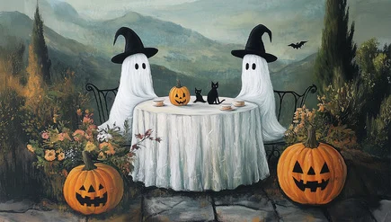

Halloween is an American holiday celebrated every year on October 31st. The tradition of Halloween started over 2000 years ago with the European festival of Samhain. This festival marked the end of the harvest season and the beginning of winter. It was believed that the boundary between the living and the dead was blurred on the night of October 31st.
Around the 8th century, the Christian church designated November 1st All Saints' Day in honor of saints and martyrs. It was also known as All Hallows' Day. All Hallows' Eve, the night before, eventually turned into the word Halloween.